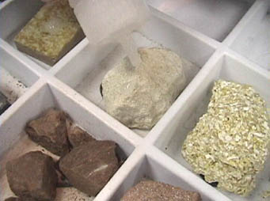
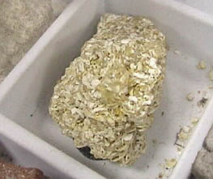

A few drops of acid provides a test for carbonates. This limestone sample bubbles vigorously in response to the acid as CO2 is released.

Applying acid to a second sample. It too tests positive for carbonate.

A third sample, which appears to be a coarse collection of shell fragments, is expected to show the presence of carbonate. The acid produces the expected bubbles.